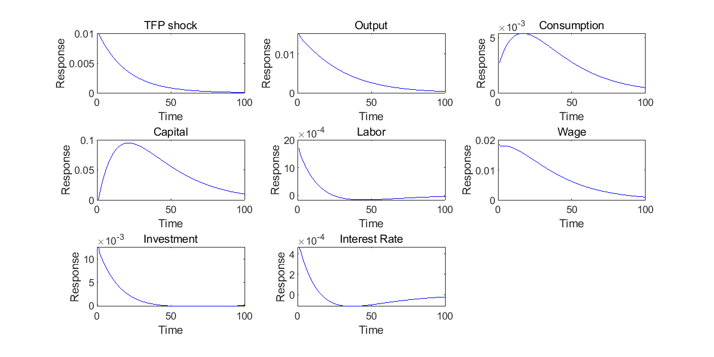
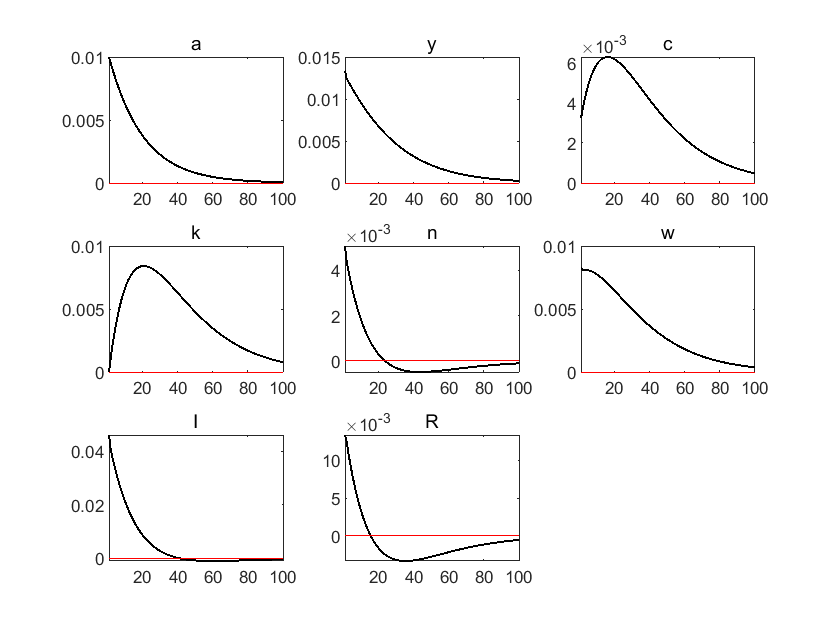
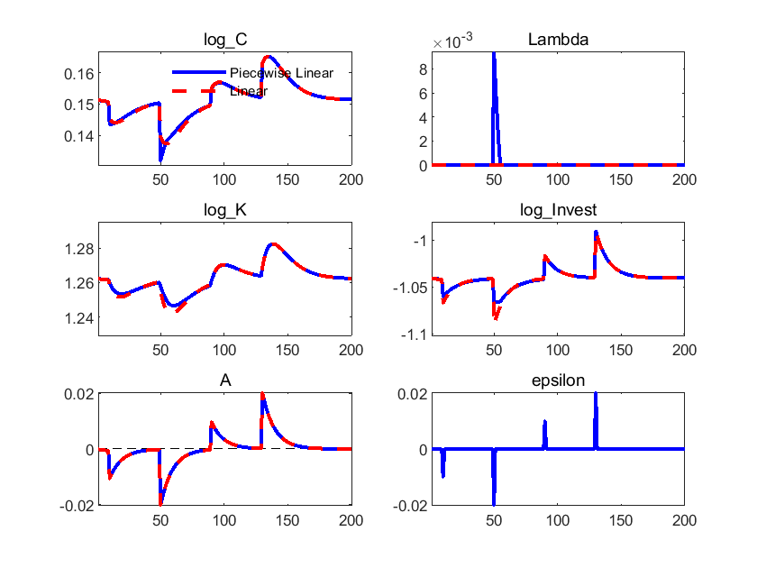

1. Implement Real Business Cycle Model in MATLAB, Dynare, Python and Julia#
DING Minjie, Spring 2025
In this tutorial, we will talk about:
A Simple RBC Model Setting
RBC Model in MATLAB
Introduction to Dynare
RBC Model in Dynare
RBC Model with Occasional Binding
RBC Model in Python
RBC Model in Julia
1. A Simple RBC Model Setting#
Households#
The households maximize:
where:
\(C\) is consumption.
\(N\) is labor.
\(\sigma\) is the intertemporal elasticity of substitution (IES).
\(\eta\) is the Frisch elasticity of labor supply (the elasticity of hours worked to the wage rate).
Households face two constraints:
where:
\(K\) is total investment in physical capital.
Firm#
Firms maximize:
where the production function is:
We assume total factor productivity (TFP) evolves in an AR(1) process:
Recursive competitive equilibrium#
A Recursive Competitive Equilibrium consists of:
Pricing functions: \(W(K, A), R(K, A)\)
Policy functions of individual households: \(K^{\prime}(K, A), N(K, A), C(K, A)\)
Law of motion of TFP: \(A^{\prime} \sim Q\left(A^{\prime} \mid A\right)\)
which satisfy:
Given \(W(K, A), R(K, A)\) and rational expectations about future aggregates, \(K^{\prime}(K, A), N(K, A), C(K, A)\) are optimal.
Given \(W(K, A), R(K, A)\), firms solve the maximization problem.
Markets clear: Labor market (trivial); Capital market (trivial); Goods market: \(Y_{t}=C_{t}+I_{t}\).
An possible way to solve the model is to get a system of difference equations that govern the dynamical system, and then analyze those difference equations directly as we did before (without solving for the full equilibrium).
In particular, from the first-order conditions (FOCs) from maximization problems and constraints (including goods market clearing condition), we can derive the following 9 equations for 9 endogenous variables: \( N_{t}, W_{t}, C_{t}, Y_{t}, I_{t}, K_{t+1}, Z_{t}, q_{t}, R_{t} \). Note that some of the variables can be consolidated \( N_{t}, W_{t}, Y_{t}, I_{t}, q_{t}, R_{t} \).
Optimality conditions consist of a system of 8 equations#
FOCs from households’ maximization problem:
FOCs from firms’ maximization problem:
Law of motions and market clearing:
Sometimes, law of motion of TFP is set as follows:
\(A_{t+1} = \rho A_{t} + (1-\rho) \bar{A} + \varepsilon_{t+1} \)
Calibration and solve steady state#
Usually, we try to solve steady state first, and then impulse response function.
It is clear that the quantitative result of the model depends on the value of parameters used. So we need to “calibrate” these parameters appropriately.
The central idea of calibration is to pin down as many deep parameters as possible.
Directly estimated from the data: Hall’s estimation about IES (0.2). For simplicity, I set \(\sigma=1\), in this way \(\frac{1}{\sigma}=1\) as well.
Match the moments from the data: \( \beta=0.99 \) to match the capital-output ratio, which is about 10 in quarterly data.
Commonly used parameter values (for a quarterly model):
\( \delta=0.025 \) (10 percent annual depreciation rate).
\( \alpha=0.35 \) (Share of labor income in the aggregate data).
\( \rho=0.95 \) (TFP process is estimated to be very persistent).
\( \eta=1 \) (for simplicity).
How about \(\phi\)?
We set it so that \(N\) equals to 1/3 in steady state.
Besides, we set \(A=1\) (sometimes people set \(Y=1\)).
Step 1: solve intertemporal price
From equation \(2\), we have:
Step 2: get ratio between \(K\), \(N\) and \(Y\) in production side
Equation 4 over equation 3, and we get relation between capital \(K\) and labor \(N\):
Combined with equation 3, we have relation between output \(Y\), capital \(K\) and labor \(N\):
Step 3: together with \(C\) in households
From equation 6 and equation 7, in steady state:
Based on what we get in step 2:
Step 4: get \(\phi\)
From equation 5:
Add information from equation 2:
The RHS right hand side is what we already know.
The LHS, we have value for \(\sigma\) and \(\eta\).
All we need is to choose a value for \(\phi\), so that \(N=\frac{1}{3}\).
Now, we can get steady state.
From \(\beta * (1 + R - \delta) = 1\), \(\beta=0.99\), \(\delta=0.25\), we get: \(R=0.0351\).
From \(\frac{N}{K} = (\frac{R}{A\alpha})^{\frac{1}{1-\alpha}}\), \(A=1\), \(N=\frac{1}{3}\), we have: \(K=11.3\).
From \(\frac{Y}{K} = A (\frac{N}{K})^{1-\alpha}\), we have: \(Y=1.13\).
From \(Y-C=\delta K\), we have: \(C=0.86\).
And then, \(W=2.20\), \(\phi=7.8\).
2. Real Business Cycle Model in MATLAB#
Now I am going to implement RBC model in MATLAB.
You can skip this part if you prefer Dynare.
First, let’s set the working directory and clear the environment.
cd"C:\Users\ading\A_TA_Notes"
pwd
ans = 'C:\Users\ading\A_TA_Notes'
clear all;
clc;
close all;
Then, let’s set the parameters.
nX = 8; % Number of variables
nEps = 1; % Number of epsilon variables
% Define indices, which will be used for plot
% I arranged them according to the order
% in which they appear in the equilibrium solution
iA = 1;
iR = 2;
iN = 3;
iK = 4;
iY = 5;
iC = 6;
iI = 7;
iW = 8;
% parameters
alpha = 0.35; % capital share
beta = 0.99; % discount factor
gamma = 1; % risk aversion
eta = 1; % labor elasticity
delta = 0.025; % depreciation rate
rho = 0.95; % TFP persistency
phi = 7.8; % labor disutility
Here is steady state solution.
%%file SteadyState.m
function X = SteadyState(beta, delta, alpha, nX)
A = 1;
R = 1 / beta - 1 + delta;
N = 1/3;
K = N * (R/A/alpha)^(1/(alpha-1));
Y = A * K^alpha * N^(1-alpha);
C = Y - delta * K;
I = delta*K;
W = (1-alpha)*Y/N;
X = zeros(nX, 1); % Initialize X as a column vector
X([1, 2, 3, 4, 5, 6, 7, 8]) = [A; R; N; K; Y; C; I; W]; % Assign values to X (adjust indices for MATLAB)
end
File SteadyState.m created successfully.
% Call the SteadyState function
X_SS = SteadyState(beta, delta, alpha, nX); % Ensure you provide the required parameters
epsilon_SS = 0.0;
% Display the steady state
fprintf('Steady state: %s\n', mat2str(X_SS));
Steady state: [1;0.0351010101010102;0.333333333333333;11.4660753507223;1.14991664772756;0.863264763959503;0.286651883768057;2.24233746306874]
Then, construct jacobian matrix.
A_jacobian_raw measures how a small change in future variable affect system equilibrium.
B_jacobian_raw measures how a small change in current variable affect system equilibrium.
C_jacobian_raw measures how a small change in past variable affect system equilibrium.
E_jacobian_raw measures how a small change in TFP shock affect system equilibrium.
syms A R N K Y C I W A_P R_P N_P K_P Y_P C_P I_P W_P A_L R_L N_L K_L Y_L C_L I_L W_L epsilon
residuals = [...
beta * (1+R-delta) * C_P^(-1/gamma) * C^(1/gamma) - 1.0; % Euler equation
phi * N^(1/eta) - W*C^(-1/gamma);
A * K_L^alpha * N^(1-alpha) - Y; % Production function
alpha * A * K_L^(alpha-1) * N^(1-alpha) - R; % MPK
(1-alpha) * A * K_L^alpha * N^(-alpha) - W; % MPN
(1 - delta) * K_L + I_L - K; % Aggregate resource constraint
% Do not use (1 - delta) * K + I - K_P
Y - C - I; % Aggregate resource constraint
rho * log(A_L) + epsilon - log(A) % TFP evolution
];
A_jacobian_raw = jacobian(residuals, [A_P,R_P,N_P,K_P,Y_P,C_P,I_P,W_P])
B_jacobian_raw = jacobian(residuals, [A, R, N, K, Y, C, I, W ])
C_jacobian_raw = jacobian(residuals, [A_L,R_L,N_L,K_L,Y_L,C_L,I_L,W_L]) % don't name it C, otherwise confused with consumption C
E_jacobian_raw = jacobian(residuals, epsilon)
Plug in values to get jacobian matrix.
X = SteadyState(beta, delta, alpha, nX);
A_s = X(1);
R_s = X(2);
N_s = X(3);
K_s = X(4);
Y_s = X(5);
C_s = X(6);
I_s = X(7);
W_s = X(8);
X_Lag = SteadyState(beta, delta, alpha, nX);
A_L_s = X_Lag(1);
R_L_s = X_Lag(2);
N_L_s = X_Lag(3);
K_L_s = X_Lag(4);
Y_L_s = X_Lag(5);
C_L_s = X_Lag(6);
I_L_s = X_Lag(7);
W_L_s = X_Lag(8);
X_Prime = SteadyState(beta, delta, alpha, nX);
A_P_s = X_Prime(1);
R_P_s = X_Prime(2);
N_P_s = X_Prime(3);
K_P_s = X_Prime(4);
Y_P_s = X_Prime(5);
C_P_s = X_Prime(6);
I_P_s = X_Prime(7);
W_P_s = X_Prime(8);
A_jacobian = subs(A_jacobian_raw, {A R N K Y C I W A_P R_P N_P K_P Y_P C_P I_P W_P A_L R_L N_L K_L Y_L C_L I_L W_L epsilon}, ...
{A_s R_s N_s K_s Y_s C_s I_s W_s A_P_s R_P_s N_P_s K_P_s Y_P_s C_P_s I_P_s W_P_s A_L_s R_L_s N_L_s K_L_s Y_L_s C_L_s I_L_s W_L_s 0});
A_jacobian = round(double(A_jacobian), 4)
B_jacobian = subs(B_jacobian_raw, {A R N K Y C I W A_P R_P N_P K_P Y_P C_P I_P W_P A_L R_L N_L K_L Y_L C_L I_L W_L epsilon}, ...
{A_s R_s N_s K_s Y_s C_s I_s W_s A_P_s R_P_s N_P_s K_P_s Y_P_s C_P_s I_P_s W_P_s A_L_s R_L_s N_L_s K_L_s Y_L_s C_L_s I_L_s W_L_s 0});
B_jacobian = round(double(B_jacobian), 4)
C_jacobian = subs(C_jacobian_raw, {A R N K Y C I W A_P R_P N_P K_P Y_P C_P I_P W_P A_L R_L N_L K_L Y_L C_L I_L W_L epsilon}, ...
{A_s R_s N_s K_s Y_s C_s I_s W_s A_P_s R_P_s N_P_s K_P_s Y_P_s C_P_s I_P_s W_P_s A_L_s R_L_s N_L_s K_L_s Y_L_s C_L_s I_L_s W_L_s 0});
C_jacobian = round(double(C_jacobian), 4)
E_jacobian = subs(E_jacobian_raw, {A R N K Y C I W A_P R_P N_P K_P Y_P C_P I_P W_P A_L R_L N_L K_L Y_L C_L I_L W_L epsilon}, ...
{A_s R_s N_s K_s Y_s C_s I_s W_s A_P_s R_P_s N_P_s K_P_s Y_P_s C_P_s I_P_s W_P_s A_L_s R_L_s N_L_s K_L_s Y_L_s C_L_s I_L_s W_L_s 0});
E_jacobian = round(double(E_jacobian), 4)
A_jacobian = 8×8 double
0 0 0 0 0 -1.1584 0 0
0 0 0 0 0 0 0 0
0 0 0 0 0 0 0 0
0 0 0 0 0 0 0 0
0 0 0 0 0 0 0 0
0 0 0 0 0 0 0 0
0 0 0 0 0 0 0 0
0 0 0 0 0 0 0 0
B_jacobian = 8×8 double
0 0.9900 0 0 0 1.1584 0 0
0 0 7.8000 0 0 3.0089 0 -1.1584
1.1499 0 2.2423 0 -1.0000 0 0 0
0.0351 -1.0000 0.0684 0 0 0 0 0
2.2423 0 -2.3545 0 0 0 0 -1.0000
0 0 0 -1.0000 0 0 0 0
0 0 0 0 1.0000 -1.0000 -1.0000 0
-1.0000 0 0 0 0 0 0 0
C_jacobian = 8×8 double
0 0 0 0 0 0 0 0
0 0 0 0 0 0 0 0
0 0 0 0.0351 0 0 0 0
0 0 0 -0.0020 0 0 0 0
0 0 0 0.0684 0 0 0 0
0 0 0 0.9750 0 0 1.0000 0
0 0 0 0 0 0 0 0
0.9500 0 0 0 0 0 0 0
E_jacobian = 8×1 double
0
0
0
0
0
0
0
1
Then solve for P and Q.
Here P satisfies: \(C + B*P + A*P*P = 0\),
and Q satisfies: \(Q = -inv(B + A * P) * E \)
P measures how system absorbs changes over time.
Q measures how eps shock affect system over time.
%%file SolveSystem.m
function [P, Q] = SolveSystem(A, B, C, E)
% Solve the system using linear time iteration as in Rendahl (2017)
MAXIT = 1000;
P = zeros(size(A)); % Initialize P with the same size as A
for it = 1:MAXIT
% Solve for P using least squares
P = - (B + A * P) \ C; % Equivalent to np.linalg.lstsq in Python
% Test the convergence condition
test = max(abs(C + B * P + A * P * P)); % Check C + B*P + A*P*P = 0
if test < 1e-7
break;
end
end
% Impact matrix
% Solution is x_{t} = P*x_{t-1} + Q*eps_t
Q = -inv(B + A * P) * E ; % Q = - E * (B + A*P)
end
File SolveSystem.m created successfully.
% Assuming A, B, C, and E are defined matrices
[P, Q] = SolveSystem(A_jacobian, B_jacobian, C_jacobian, E_jacobian);
% Display the results
disp('Matrix P:');
disp(P);
disp('Matrix Q:');
disp(Q);
Matrix P:
0.9500 0 0 0.0000 0 0 0.0000 0
0.0444 0 0 -0.0024 0 0 -0.0008 0
0.1611 0 0 -0.0052 0 0 -0.0121 0
0 0 0 0.9750 0 0 1.0000 0
1.4537 0 0 0.0234 0 0 -0.0272 0
0.2564 0 0 0.0446 0 0 0.0424 0
1.1973 0 0 -0.0212 0 0 -0.0695 0
1.7508 0 0 0.0807 0 0 0.0285 0
Matrix Q:
1.0000
0.0467
0.1696
0
1.5302
0.2699
1.2604
1.8430
Finally, let’s plot the impulse response functions.
% Assuming nX, Q, and P are defined
IRF_RBC = zeros(nX, 100); % Initialize IRF_RBC with zeros
IRF_RBC(:, 1) = Q * 0.01; % Set the first column
for t = 2:100 % MATLAB indices start at 1
IRF_RBC(:, t) = P * IRF_RBC(:, t - 1); % Matrix multiplication
end
figure('Position', [100, 100, 800, 400]);
subplot(3,3,1)
plot(IRF_RBC(iA, :), 'blue', 'DisplayName', 'Impulse Response of Output'); % Plot the data
title('TFP shock'); xlabel('Time'); ylabel('Response');
subplot(3,3,2)
plot(IRF_RBC(iY, :), 'blue', 'DisplayName', 'Impulse Response of Output'); % Plot the data
title('Output'); xlabel('Time'); ylabel('Response');
subplot(3,3,3)
plot(IRF_RBC(iC, :), 'blue', 'DisplayName', 'Impulse Response of Output'); % Plot the data
title('Consumption'); xlabel('Time'); ylabel('Response');
subplot(3,3,4)
plot(IRF_RBC(iK, :), 'blue', 'DisplayName', 'Impulse Response of Output'); % Plot the data
title('Capital'); xlabel('Time'); ylabel('Response');
subplot(3,3,5)
plot(IRF_RBC(iN, :), 'blue', 'DisplayName', 'Impulse Response of Output'); % Plot the data
title('Labor'); xlabel('Time'); ylabel('Response');
subplot(3,3,6)
plot(IRF_RBC(iW, :), 'blue', 'DisplayName', 'Impulse Response of Output'); % Plot the data
title('Wage'); xlabel('Time'); ylabel('Response');
subplot(3,3,7)
plot(IRF_RBC(iI, :), 'blue', 'DisplayName', 'Impulse Response of Output'); % Plot the data
title('Investment'); xlabel('Time'); ylabel('Response');
subplot(3,3,8)
plot(IRF_RBC(iR, :), 'blue', 'DisplayName', 'Impulse Response of Output'); % Plot the data
title('Interest Rate'); xlabel('Time'); ylabel('Response');

As we can see, almost all variable increase after a positive TFP shock.
These figures are the same as what we will get by Dynare, except for the magnitute, since we plot absolute value here, and plot percentage change in Dynare.
3. Introduction to Dynare#
Dynare is a software platform for handling a wide class of economic models, in particular dynamic stochastic general equilibrium (DSGE) and overlapping generations (OLG) models.
We can use Dynare to:
compute the steady state of a model;
compute the first, second order, or higher order approximation to solutions of stochastic models;
estimate parameters of DSGE models using either a maximum likelihood or a Bayesian approach.
Steps to install Dynare#
Install Matlab.
Download at https://www.dynare.org/download/.
Install (manual 2.2.1).
Configure (manual 2.4).
To configure, personally I recommend to use ‘addpath d:/dynare/6.2/matlab’
Sometimes people will use menu entries:
“Set Path” > “Add Folder… “ >
If you use this method, take care not to click “Add Folder and Sub Folder…”
Version Choice#
Dynare now has updated to version 6. While some literature’s replication package is based on version 4.
A possible solution is to install MATLAB of different versions in your computer.
For each MATLAB version, choose a Dynare version for it.
In this way, you can replicate certain literature using Dynare 4, and try new functions using Dynare 6.
.mod file#
Structure of a .mod file:
Preamble: parameters, variables
Model
Initial Value, End Value
Steady State
Shocks
Computation
To run a .mod code, type dynare xxxx.mod in the command window.
4. Real Business Cycle Model in Dynare#
We follow the model setting in part 1.
A typical .mod file consist of 7 parts:
1. variable
2. parameters
3. model
4. initial value
5. shocks
6. steady
7. simulation
Here is an example.
var y I k a c w R n;
varexo e;
parameters alpha beta delta rho gamma sigmae eta phi;
alpha=0.35;
beta=0.99;
delta=0.025;
rho=0.95;
gamma=1;
sigmae=0.01;
eta = 1;
phi = 7.6;
In model part, there are 8 equations.
They are exactly the equilibiurm conditions we get in part 8.
Remember the 8 equations in tag 1~8.
Note that here all variables are in log, so that we can get percentage change in the final result.
model;
exp(c)^(-1/gamma)=betaexp(c(+1))^(-1/gamma)(exp(R)+1-delta);
exp(c)^(-1/gamma)exp(w)=phiexp(n)^(1/eta);
exp(y)=exp(a)exp(k(-1))^alphaexp(n)^(1-alpha);
exp(R)=alpha*exp(a)*exp(k(-1))^(alpha-1)*exp(n)^(1-alpha);
exp(w)=(1-alpha)*exp(a)exp(k(-1))^alphaexp(n)^(-alpha);
exp(k)=exp(I(-1))+(1-delta)*exp(k(-1));
exp(y)=exp(c)+exp(I);
a=rho*a(-1)+e;
end;
We had better give initial value to Dynare, so that we can get reasonable solution when there are multiple solutions.
It can be numbers assigned, or formula based on parameters.
In the following code, it’s the steady state that we get in part 1.
Also, note that variables are in log.
initval;
a = 0;
n = log(1/3);
R = log(1/beta - 1 + delta);
k = log(exp(n)*(exp(R)/exp(a)/alpha)^(1/(alpha-1)));
y = log(exp(a)exp(k)^alphaexp(n)^(1-alpha));
I = log(delta)+k;
c = log(exp(y)-exp(I));
w = log(1-alpha) + y - n;
shocks;
var e = sigmae^2;
end;
steady;
stoch_simul(order=1,irf=100);
Let’s see the result from Dynare
cd"C:\Users\ading\A_TA_Notes"
pwd
ans = 'C:\Users\ading\A_TA_Notes'
dynare rbc_8equations.mod
Starting Dynare (version 6.2).
Calling Dynare with arguments: none
Starting preprocessing of the model file ...
Found 8 equation(s).
Evaluating expressions...
Computing static model derivatives (order 1).
Normalizing the static model...
Finding the optimal block decomposition of the static model...
2 block(s) found:
1 recursive block(s) and 1 simultaneous block(s).
the largest simultaneous block has 7 equation(s)
and 7 feedback variable(s).
Computing dynamic model derivatives (order 1).
Normalizing the dynamic model...
Finding the optimal block decomposition of the dynamic model...
2 block(s) found:
1 recursive block(s) and 1 simultaneous block(s).
the largest simultaneous block has 7 equation(s)
and 7 feedback variable(s).
Preprocessing completed.
Preprocessing time: 0h00m00s.
STEADY-STATE RESULTS:
a 0
y 0.0441673
c -0.226868
k 2.29508
n -1.08129
w 0.719991
I -1.3938
R -3.34953
MODEL SUMMARY
Number of variables: 8
Number of stochastic shocks: 1
Number of state variables: 3
Number of jumpers: 1
Number of static variables: 4
MATRIX OF COVARIANCE OF EXOGENOUS SHOCKS
Variables e
e 0.000100
POLICY AND TRANSITION FUNCTIONS
a y c k n w I R
Constant 0 0.044167 -0.226868 2.295080 -1.081289 0.719991 -1.393799 -3.349525
a(-1) 0.950000 1.271407 0.307186 0 0.482110 0.789297 4.368600 1.271407
k(-1) 0 0.212394 0.575213 0.975000 -0.181409 0.393803 -0.953025 -0.787606
I(-1) 0 -0.006815 0.013629 0.025000 -0.010222 0.003407 -0.072483 -0.006815
e 1.000000 1.338323 0.323354 0 0.507485 0.830838 4.598527 1.338323
THEORETICAL MOMENTS
VARIABLE MEAN STD. DEV. VARIANCE
a 0.0000 0.0320 0.0010
y 0.0442 0.0499 0.0025
c -0.2269 0.0378 0.0014
k 2.2951 0.0510 0.0026
n -1.0813 0.0114 0.0001
w 0.7200 0.0428 0.0018
I -1.3938 0.1139 0.0130
R -3.3495 0.0343 0.0012
MATRIX OF CORRELATIONS
Variables a y c k n w I R
a 1.0000 0.9857 0.8143 0.6841 0.8043 0.9350 0.9508 0.4681
y 0.9857 1.0000 0.9002 0.7968 0.6933 0.9813 0.8854 0.3129
c 0.8143 0.9002 1.0000 0.9804 0.3103 0.9672 0.5947 -0.1316
k 0.6841 0.7968 0.9804 1.0000 0.1170 0.8982 0.4247 -0.3242
n 0.8043 0.6933 0.3103 0.1170 1.0000 0.5416 0.9488 0.9008
w 0.9350 0.9813 0.9672 0.8982 0.5416 1.0000 0.7794 0.1243
I 0.9508 0.8854 0.5947 0.4247 0.9488 0.7794 1.0000 0.7181
R 0.4681 0.3129 -0.1316 -0.3242 0.9008 0.1243 0.7181 1.0000
COEFFICIENTS OF AUTOCORRELATION
Order 1 2 3 4 5
a 0.9500 0.9025 0.8574 0.8145 0.7738
y 0.9633 0.9307 0.8989 0.8679 0.8378
c 0.9958 0.9897 0.9818 0.9723 0.9613
k 0.9987 0.9952 0.9895 0.9821 0.9729
n 0.8952 0.8084 0.7275 0.6527 0.5834
w 0.9809 0.9625 0.9435 0.9241 0.9043
I 0.9146 0.8431 0.7760 0.7135 0.6553
R 0.9179 0.8350 0.7584 0.6873 0.6214

Total computing time : 0h00m01s
5. RBC Model with Occasional Binding#
Occasional Binding Constraints refer to situations in economic models where certain constraints are not always active but can become binding under specific conditions.
OccBin is an important tool developed by Guerrieri and Iacoviello (JME, 2015).
Dynare manual provides an example on how to set up occasional binding model.
There are two occasionally binding constraints newly added into RBC model:
The INEG constraint implements quadratic capital adjustment costs if investment falls below its steady state. If investment is above steady state, there are no adjustment costs
The IRR constraint implements irreversible investment. Investment cannot be lower than a factor \(phi\) of its steady state.
We list all variables first.
var A \(A\) (long_name=’TFP’)
C \(C\) (long_name=’consumption’)
Invest \(I\) (long_name=’investment’)
K \(K\) (long_name=’capital’)
Lambda \(\lambda\) (long_name=’Lagrange multiplier’)
log_K \({\hat K}\) (long_name=’log capital’)
log_Invest \({\hat I}\) (long_name=’log investment’)
log_C \({\hat C}\) (long_name=’log consumption’)
;
varexo epsilon \(\varepsilon\) (long_name=’TFP shock’);
Then we set parameters.
parameters alpha $\alpha$ (long_name='capital share')delta $\delta$ (long_name='depreciation')
beta $\beta$ (long_name='discount factor')
sigma $\sigma$ (long_name='risk aversion')
rho $\rho$ (long_name='autocorrelation TFP')
phi $\phi$ (long_name='irreversibility fraction of steady state investment')
psi $\psi$ (long_name='capital adjustment cost')
;
beta=0.96;
alpha=0.33;
delta=0.10;
sigma=2;
rho = 0.9;
phi = 0.975;
psi = 5;
The model is set as follows.
In equation 2, when INEG binds, there is extra adjustment cost: psi(K/K(-1)-1)^2.
In equation 4, when IRR binds, investment equals to phi*investment_steadystate, investment can’t be lower, and Lambda is larger than zero.
model;// 1.
[name='Euler', bind = 'INEG']
-C^(-sigma)*(1+2*psi*(K/K(-1)-1)/K(-1))+ beta*C(+1)^(-sigma)*((1-delta)-2*psi*(K(+1)/K-1)*
(-K(+1)/K^2)+alpha*exp(A(+1))*K^(alpha-1))= -Lambda+beta*(1-delta)*Lambda(+1);
[name=’Euler’, relax = ‘INEG’]
-C^(-sigma) + betaC(+1)^(-sigma)(1-delta+alpha*exp(A(+1))K^(alpha-1))= -Lambda+beta(1-delta)*Lambda(+1);
// 2.
[name=’Budget constraint’,bind = ‘INEG’]
C+K-(1-delta)K(-1)+psi(K/K(-1)-1)^2=exp(A)*K(-1)^(alpha);
[name=’Budget constraint’,relax = ‘INEG’]
C+K-(1-delta)*K(-1)=exp(A)*K(-1)^(alpha);
// 3.
[name=’LOM capital’]
Invest = K-(1-delta)*K(-1);
// 4.
[name=’investment’,bind=’IRR,INEG’]
(log_Invest - log(phisteady_state(Invest))) = 0;
[name=’investment’,relax=’IRR’]
Lambda=0;
[name=’investment’,bind=’IRR’,relax=’INEG’]
(log_Invest - log(phisteady_state(Invest))) = 0;
// 5.
[name=’LOM TFP’]
A = rho*A(-1)+epsilon;
// Definitions
[name=’Definition log capital’]
log_K=log(K);
[name=’Definition log consumption’]
log_C=log(C);
[name=’Definition log investment’]
log_Invest=log(Invest);
end;
occbin_constraints;
name ‘IRR’; bind log_Invest-log(steady_state(Invest))<log(phi); relax Lambda<0;
name ‘INEG’; bind log_Invest-log(steady_state(Invest))<-0.000001; %not exactly 0 for numerical reasons
end;
The steady state solution is here.
steady_state_model;K = ((1/beta-1+delta)/alpha)^(1/(alpha-1));
C = -delta*K +K^alpha;
Invest = delta*K;
log_K = log(K);
log_C = log(C);
log_Invest = log(Invest);
Lambda = 0;
A=0;
end;
Assume there is negative TFP shock at period 1-9, 10 and 50,
there is positive TFP shock at period 90 and 130.
shocks;var epsilon; stderr 0.015;
end;
steady;
shocks(surprise);
var epsilon;
periods 1:9, 10, 50, 90, 130, 131:169;
values -0.0001, -0.01,-0.02, 0.01, 0.02, 0;
end;
occbin_setup;
occbin_solver(simul_periods=200,simul_check_ahead_periods=200);
occbin_graph log_C epsilon Lambda log_K log_Invest A;
After 3 negative TFP shocks, at period 50, IRR condition binds, and there is difference between piecewise linear (occasional binding) and linear case.
cd"C:\Users\ading\A_TA_Notes"
pwd
ans = 'C:\Users\ading\A_TA_Notes'
dynare Occbin_example.mod
Starting Dynare (version 6.2).
Calling Dynare with arguments: none
Starting preprocessing of the model file ...
Found 8 equation(s).
Evaluating expressions...
Computing static model derivatives (order 1).
Normalizing the static model...
Finding the optimal block decomposition of the static model...
4 block(s) found:
3 recursive block(s) and 1 simultaneous block(s).
the largest simultaneous block has 2 equation(s)
and 2 feedback variable(s).
Computing dynamic model derivatives (order 2).
Normalizing the dynamic model...
Finding the optimal block decomposition of the dynamic model...
3 block(s) found:
2 recursive block(s) and 1 simultaneous block(s).
the largest simultaneous block has 5 equation(s)
and 4 feedback variable(s).
Preprocessing completed.
Preprocessing time: 0h00m00s.
STEADY-STATE RESULTS:
A 0
C 1.16335
Invest 0.353288
K 3.53288
Lambda 0
log_K 1.26211
log_Invest -1.04047
log_C 0.151306

Total computing time : 0h00m02s
Reference#
Dynare Manual, https://www.dynare.org/manual/
Pontus Rendahl, “Linear Time Iteration”, Institute for Advanced Studies
Alisdair Mckay, “Computational Notes on Heterogeneous-Agent Macroeconomics”, https://alisdairmckay.com/Notes/HetAgentsV2/